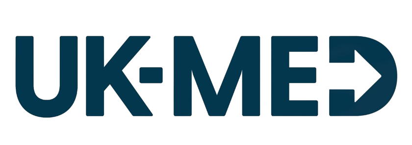

Medical Excellence Partner
Nasser Medical Complex (NMC) serves as the primary tertiary referral centre for southern Gaza and the main hub for emergency, trauma, surgical, and medical services. UK-Med has played a key role in supporting the continuity and resilience of services at NMC, particularly within the Emergency Department.
Despite sustained pressure from recurrent mass-casualty incidents, infrastructure degradation, and ongoing supply chain constraints, the facility continues to function as the critical point for stabilisation and referral in the region. The Emergency Department remains under continuous strain, reflecting its central role in managing both routine medical needs and sudden surges in trauma-related presentations.
UK-Med is a British frontline medical aid charity founded on the values and expertise of the UK’s National Health Service (NHS). For more than 30 years, the organisation has worked towards a world where everyone gets the healthcare they need when emergencies hit. When health services are overwhelmed by disasters, disease outbreaks or conflict, UK-Med gets expert health staff to where they’re needed, fast.
Support of Nasser Medical Complex's Emergency Department has been generously funded by the UK's Foreign Commonwealth and Development Office (FCDO), and the World Health Organization (WHO).
Since June 2024, UK-Med has contributed to the restoration and stabilisation of core emergency care functions through the deployment of international emergency medical teams, reinforcement of national staffing through incentive mechanisms, and the provision of staff incentives for personnel working within the Emergency Department. UK-Med has also supported rehabilitation works within the Emergency Department, improving patient flow and enhancing overall service efficiency.
UK-Med has also supported the development and implementation of clinical protocols and guidelines that are currently in use, strengthening standardisation of care and improving clinical decision-making. These efforts have been complemented by the re-establishment of triage systems, infection prevention and control standards, and essential clinical workflows, alongside targeted infrastructure rehabilitation and equipment restoration. Through continuous clinical mentorship and operational support, UK-Med has helped sustain uninterrupted service delivery, ensuring that the Emergency Department remains fully operational even during periods of high influx and structural constraint.
In addition, UK-Med operates a Type 2 Field Hospital in Al Mawasi, Type 1 Field Hospital in Deir al-Balah, PHCC in Jabalia, and supported the rehabilitation of Sheikh Radwan PHCC. Across the facilities, UK-Med has conducted over 1 million patient consultations.
Comprehensive training programs for healthcare professionals.
Advanced solutions for improved patient outcomes.
Cutting-edge technology and research in healthcare.